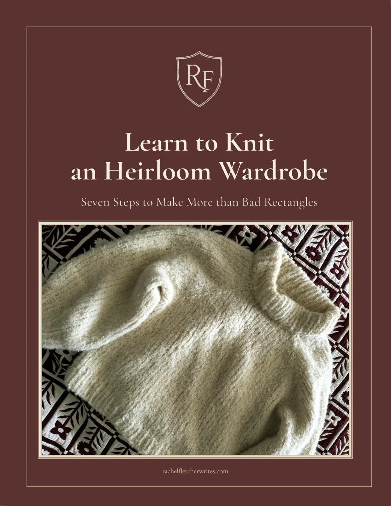

Seven steps to make more than bad rectangles.
Twenty-six pages to take you from two basic stitches to your first sweater — filled with straightforward tips like the needles actually worth buying, the how-to videos worth watching, the patterns worth buying, what yarn to buy, what baby-step garment to knit first, and the best type of sweater to cast on when you’re ready.
You’ll also get Fletchling Thoughts — cozy letters on books, home, and making meaning, every other week. Unsubscribe anytime.
The two stitches that unlock everything. English or Continental — pick one, get to practicing, and thousands of sweaters open up.
Throw out the iconic ideal of two wooden needles. Circular needles knit both flat and in the round. Go by millimeters, not US sizes.
Composition, weight, gauge and blocking — plus how to substitute a yarn, and how to learn the rules well enough to break them.
A hat is a sweater in miniature. Practice ribbing and decreases at a small, low-stakes scale — and knit an adult size; baby beanies get fiddly.
A top-down raglan, knit in the round from the neck down. Almost all of it is knit and purl. You already have every skill you need.
Once you’ve knit your first sweater, I tell you what to knit next so you can expand your repertoire, and your wardrobe, without being overwhelmed.
Beyond the raglan: set-in sleeves, yokes, bottom-up knits. New silhouettes, and whatever yarn delights you.
Navigating the Yarn Aisle and How to Read a Yarn Band — free to read right now.
Every step links out to a skills library — cast on, knit, purl, bind off, weave in your ends — so you never have to go hunting for a video.
I learned to knit in my great-grandmothers’ sitting room, eating tootsie rolls and watching Ellen on full volume. For years afterward I honored that legacy by making bad rectangles in terrible chunky chenille yarn — pot holders, doll blankets, scarves either far too short or much too long.
It took me until my thirties to finish a sweater. But once I finished that first one, I haven’t been able to stop. Knitting has carried me through a NICU stay, endometriosis flare-ups and diagnoses, and weeks of surgery recovery. I’ve brought it with me to the ER, my kids’ sports games and pickup lines, and on a road trip through the UK. It’s art and craft and also, truly, not that hard. Make a wardrobe you love, with your own two hands. And love who you become while you’re doing it.
Free, all twenty-six pages, on its way the moment you hit the button.